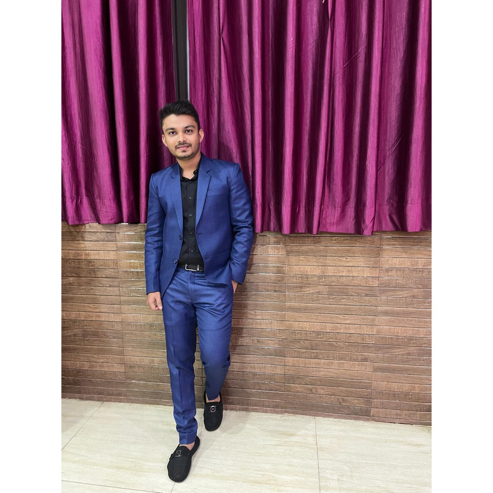

Sharim Rahman
Experienced Professional (Immediate Joiner)

Summary
A Skilled development professional bringing around 2+ years experience in software design,development
and Maintaining of BPM application.
Open to work in diverse domains and technology.
Active learner and ready to upskill for a switch to any other required technology.
Education
- Master of Computer Application
- Aliah University, Kolkata (2022-2024)
- Graduated with 8.39 cgpa
- Bachelor of Computer Application
- Meghnad Saha Institute of Technology, MAKAUT, Kolkata (2018-2021)
- Graduated with 8.78 dgpa
- HSC/Intermediate
- Tagore Academy, ISC, Jamshedpur (2016-2017)
- Scored 65.4% in Computer Science (PCM)
- Matriculation
- Tagore Academy, ICSE, Jamshedpur (2014-2015)
- Scored 83.8% in Computer Science
Work Experience
Programmer, Cognizant Technology Solutions
- Tenure: 16/12/2021-10/04/2024, Kolkata
- Task:
- Involved in development of Web Applications using html, css & js.
- Having experience in handling projects as an active team
member for clients such as JP Morgan Payments.
Skills
- Java ⭐⭐⭐⭐
- HTML & CSS ⭐⭐⭐⭐
- DBMS ⭐⭐⭐⭐
- JavaScript ⭐⭐⭐
- Postgresql ⭐⭐⭐⭐
Certifications
- Certification in SQL(PostgreSQL) (12/2022)
- Project Certification (06/2021)
- Project Certification (Python & DJANGO), Web Skitters Academy
- Certification in Android Development (09/2020)
- Project Certification in Android Application Development, ASD Skills
- Certification in Web Development (08/2020)
- Certification in Soft Skills (07/2018)
- Certification in Soft Skills, NPTEL
Extra Curricular Activities
- Participation in Tech Fest
- Participation Certificate in College Tech Fest 'PARIDHI'
- Volunteered in Blood Donation
- Organized and participated in Blood Donation Camp
- Volunteered in College Fest
- Volunteered in college fest like 'Advaya' and 'Footprints'
- Yuva Club Member
- Has been an active member of 'Yuva' club member in college & organized
social works.
Personal Projects
- Industrial Training in College (11/2020)
- Android Application Development on Bluetooth Viewer
- Major Project in College (06/2021)
- Project on web development
- Web Development on 'My Resume'
Other